Breakdown¶
{kind=link}
Important - Selection Order
For certain features of the Vertex Colour Tool you will need Maya to Track Selection Order.
If features like Copy/Paste or Replace VC etc. do not work correctly, make sure track selection order is enabled in your Settings/Preferences window (under Selection).


Important - Untrusted Plugin Loading - Security Warning
{kind=link}
The first time you use the tool, Maya will show an "Untrusted Plugin Loading" warning for VertexColourToolCmd.py.
VertexColourToolCmd.py is the tool's undo support — click Allow (tick "Apply to all plugins in this location" to not be asked again). More info about this here.
1. Replace VC¶
-
Bulk-replace specific vertex colors on your objects.
- Pick a color from the swatch (10), then select a face on your mesh. All faces sharing that exact color will be replaced with your new swatch color.
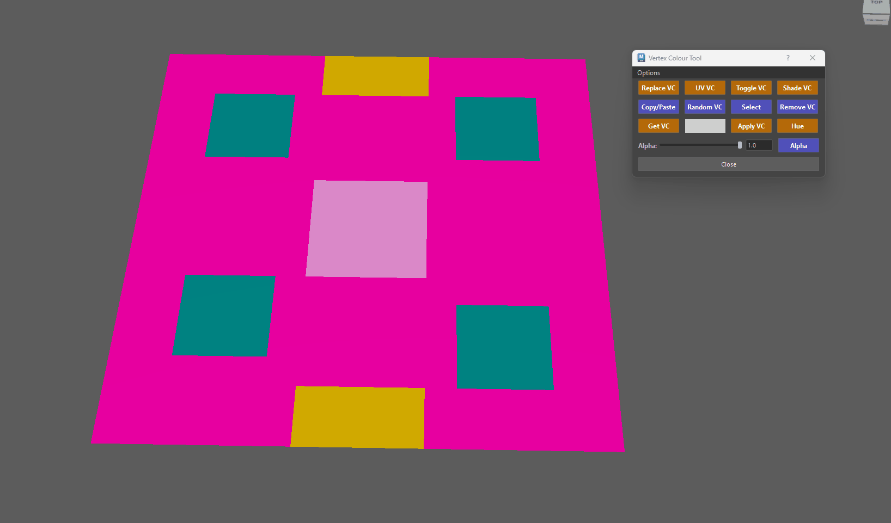
Replace VC from Swatch - Ctrl + Click: Select multiple faces, the colour of your first selected face will be used to replace all similar colours from the rest of your selection.
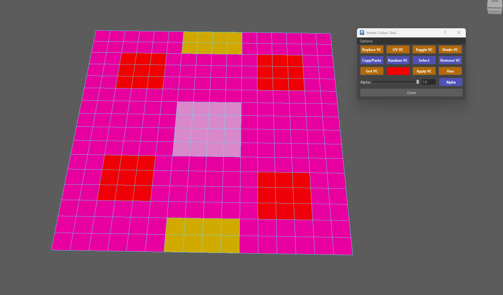
Replace VC from face selection
{kind=link}
{kind=link}
2. UV VC¶
-
Sets a random vertex colour per UV Shell.
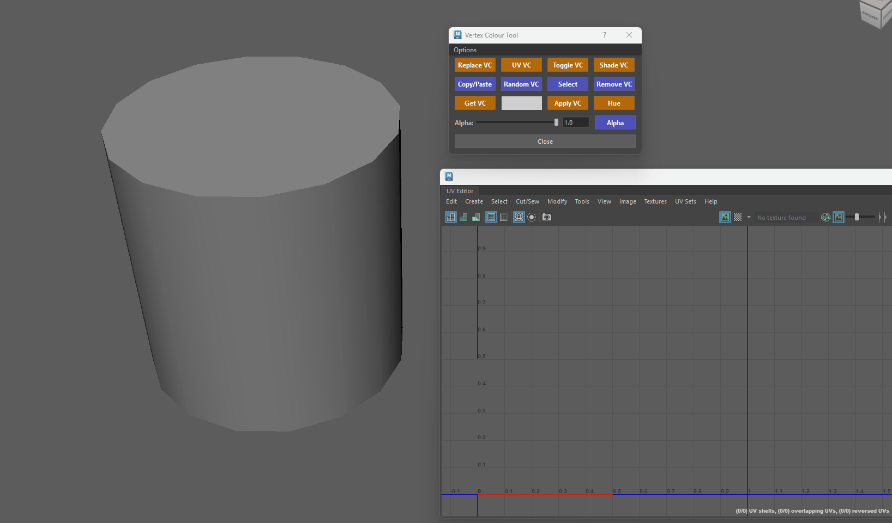
Random Colour Per UV Shell - Selecting a face will only change the vertex colour of the UV shell to which it belongs.
- Ctrl + Click: to cut UV edges (if you have faces selected, those are converted to perimeter edges before being cut)
- Shift + Click: to sew UV edges.
- Alt + Click: to select UV border edges (from Object mode, not component).
- Ctrl + Click: with selected objects to create a camera projection of the UV's.
-
Alt + Shift Click: in object mode the tool re-projects the UV's from the camera's point of view and for each different vertex colour it will create a UV Shell.
- Useful for Zbrush workflow so you can polygroup by UV Shell.
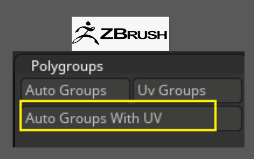
The tool will Unfold your UV's, orient them and lay them out in the 0-1 UV space.
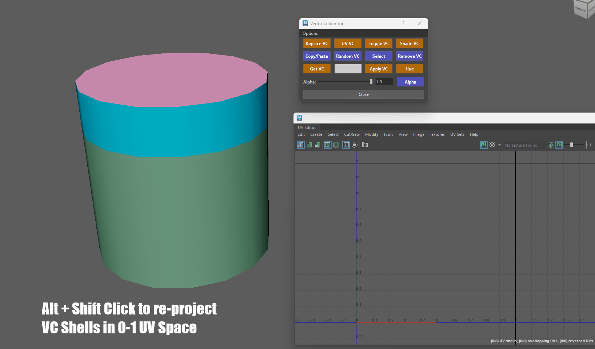
Re-project UV Shells in 0-1 space - Useful for Zbrush workflow so you can polygroup by UV Shell.
{kind=link}
{kind=link}
{kind=link}
3. Toggle VC¶
-
Toggles the visibility of vertex colours in your scene.
-
Toggles vertex color visibility on the selected object (or globally if nothing is selected).
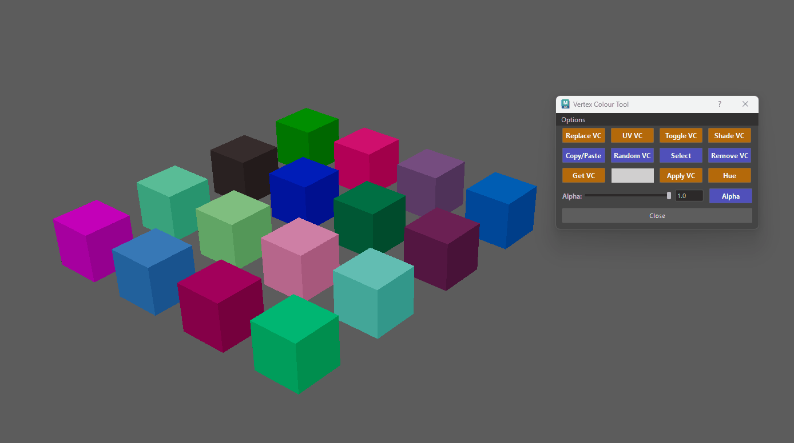
Toggle Visibility on all or Selected -
Ctrl + Click: Force-turns off vertex color display for all objects in the scene.
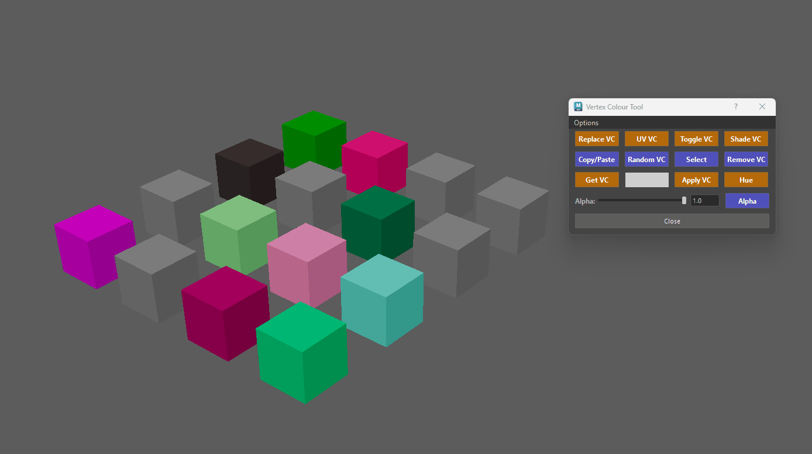
Turn off Visibility on all Objects in your Scene
-
{kind=link}
{kind=link}
4. Shade VC¶
- Changes the Color Material Channel to dictate how colors interact with scene lighting.
- Click: Diffuse
- Ctrl: None
- Alt: Ambient + Diffuse
- Shift: Emission
- Ctrl + Shift: Ambient
{kind=link}
5. Copy/Paste¶
-
Instantly copies the vertex color of the last selected face and pastes it onto all other currently selected faces.
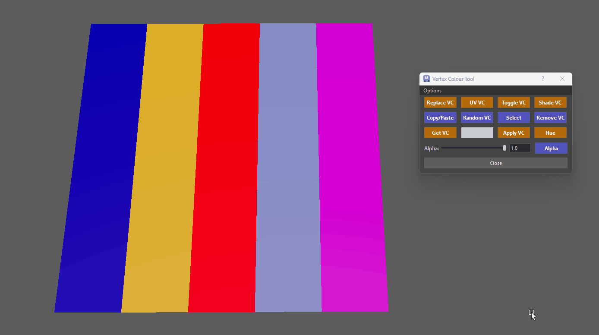
Copy Paste VC Faces
{kind=link}
6. Random VC¶
-
Gives a random vertex colour to a selected object, face or vertex.
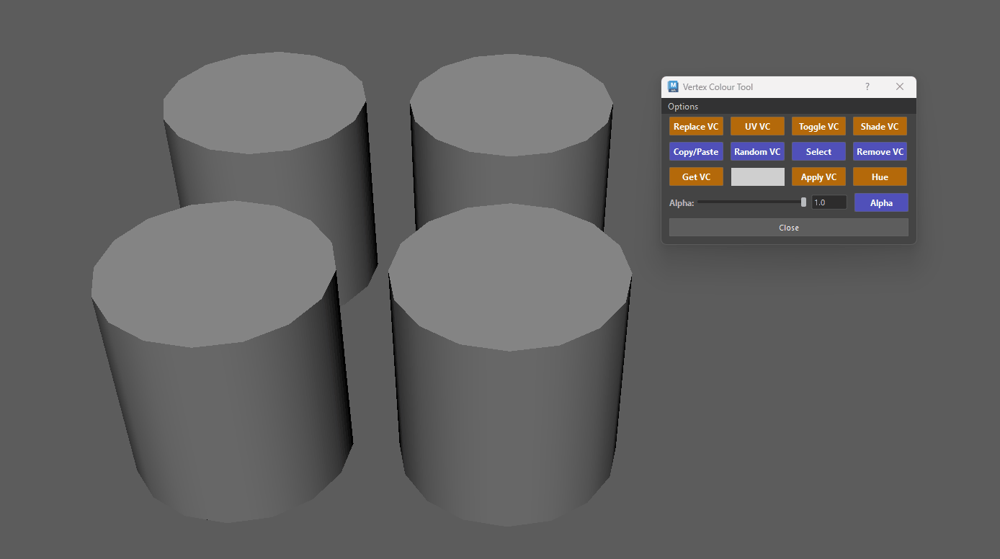
Assigning Random VC - Shift Click: Applies the same random color to multiple selected objects or groups.
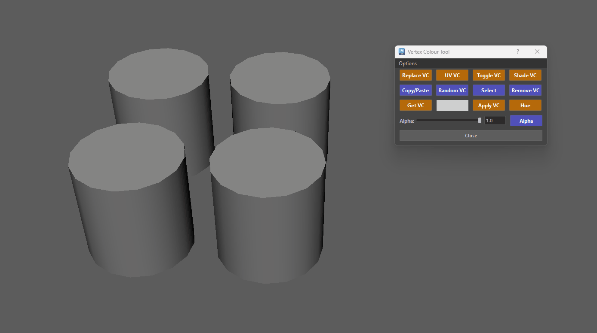
Assigning Same Random VC to Selected Objects -
Ctrl Click: Gives different sub-objects/children their own unique random color (Object mode).
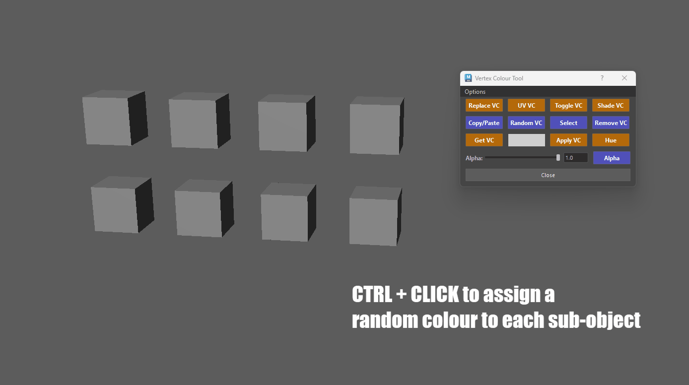
Assigning Same Random VC to Sub-Objects -
Ctrl + Shift + Click: Applies unique random colors per-selected component.
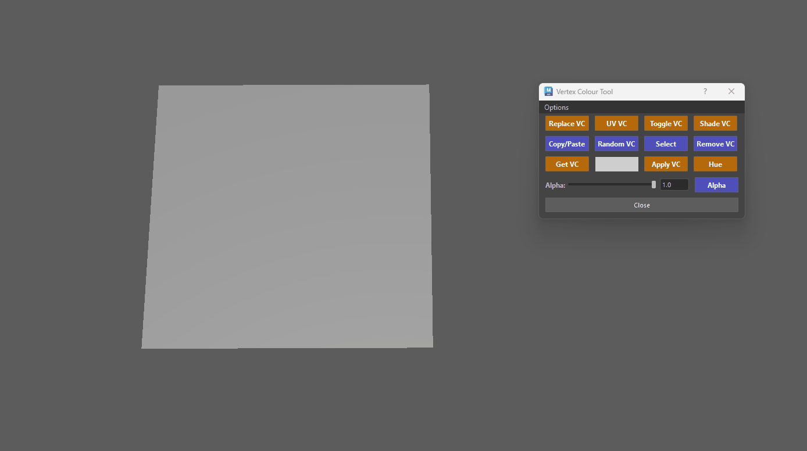
Assigning Random VC to Components
{kind=link}
{kind=link}
{kind=link}
{kind=link}
7. Select¶
-
Create smart selections based on vertex color data (similar to polygroup selection in Zbrush).
- Click (Object Mode): Selects all faces matching the active swatch color (10).
Select From Swatch - Click (Face Mode): Selects all faces matching the color of your currently selected face.
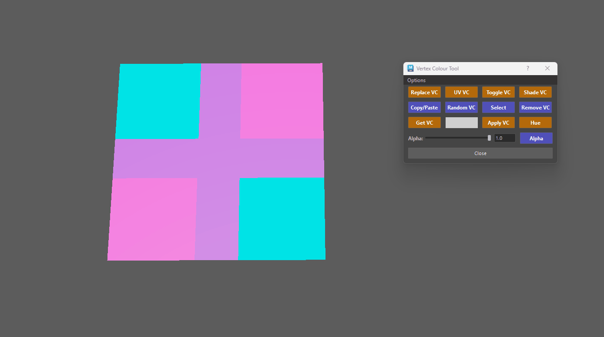
Select From Face
Info - Create Selection Sets using the Select Button
The Select button also has the ability to create a custom (or fixed) Selection Sets.
- Ctrl Click: Creates a custom selection set named baking_manager_set.
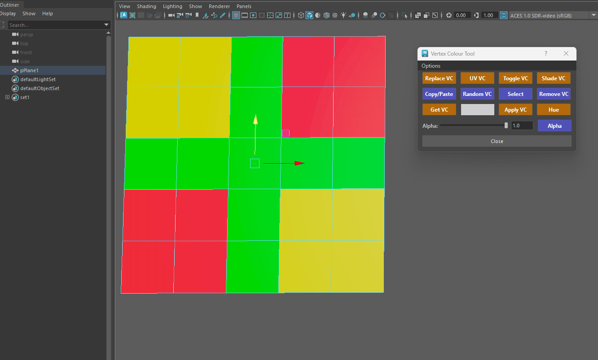
Create baking_manager_set Selection Set - Ctrl + Shift Click: Adds selection to the baking_manager_set.
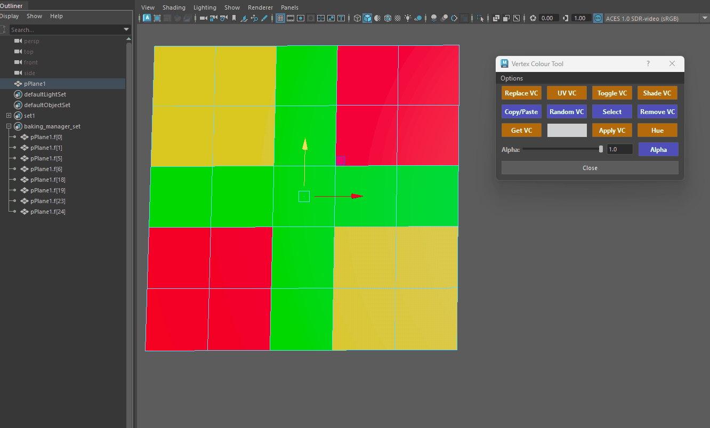
Add components to baking_manager_set Selection Set - Alt + Click: Removes selection from the baking_manager_set.
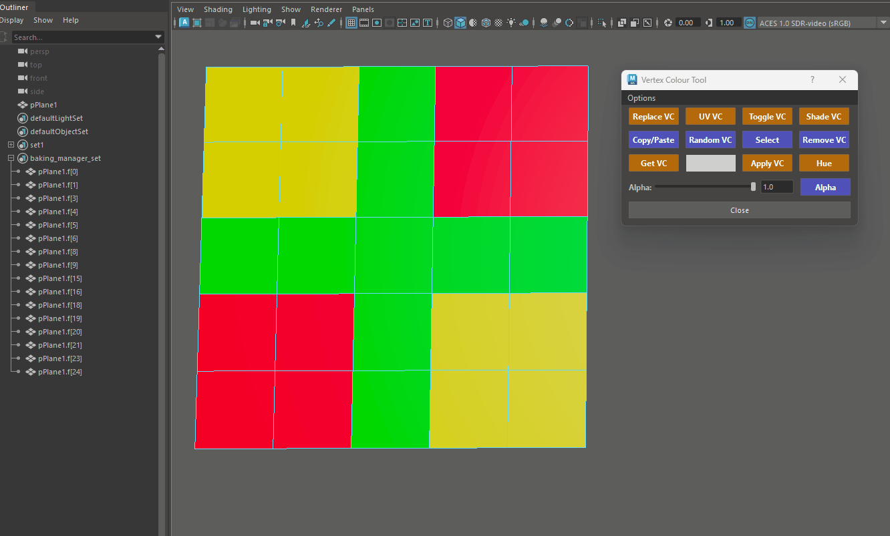
Remove components from baking_manager_set Selection Set - Alt + Ctrl Click: Deletes the baking_manager_set.
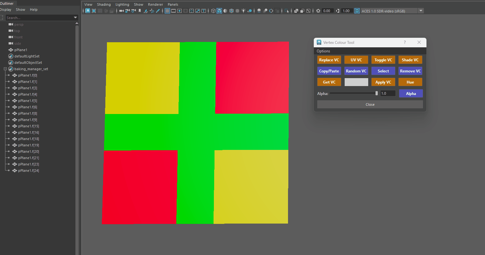
Deletes the baking_manager_set Selection Set - Alt + Ctrl + Shift Click: Opens Maya's "Create Quick Select Set" dialog.
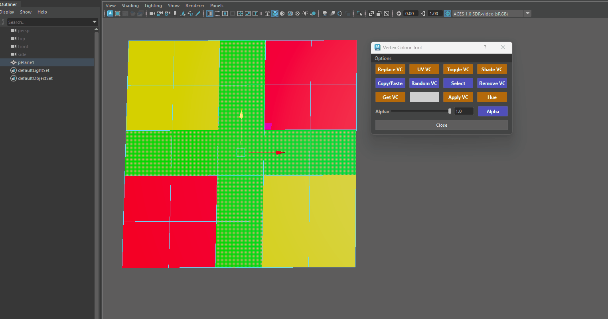
Opens Maya's "Create Quick Select Set" dialog
8. Remove VC¶
- Click (Object Mode): Selects all faces matching the active swatch color (10).
-
Removes the vertex color from the selected object.
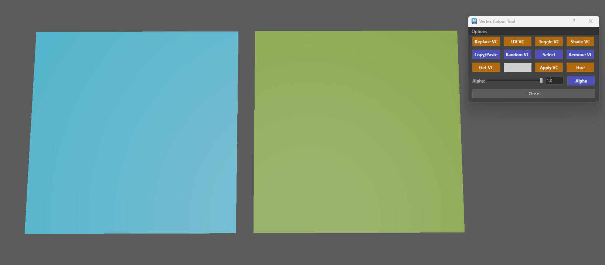
Remove VC Maya Bug - Vertex Paint is not Removed
There is a Maya bug where the vertex paint is not removed. This usually happens when you already have vertex paint and apply some additional modelling to your object.
It is advised on those instances to use the Ctrl + Click feature of the tool which deletes the Colour Set of the selected Object, or use Ctrl + Shift which will delete history but will remove the colours on selected components.
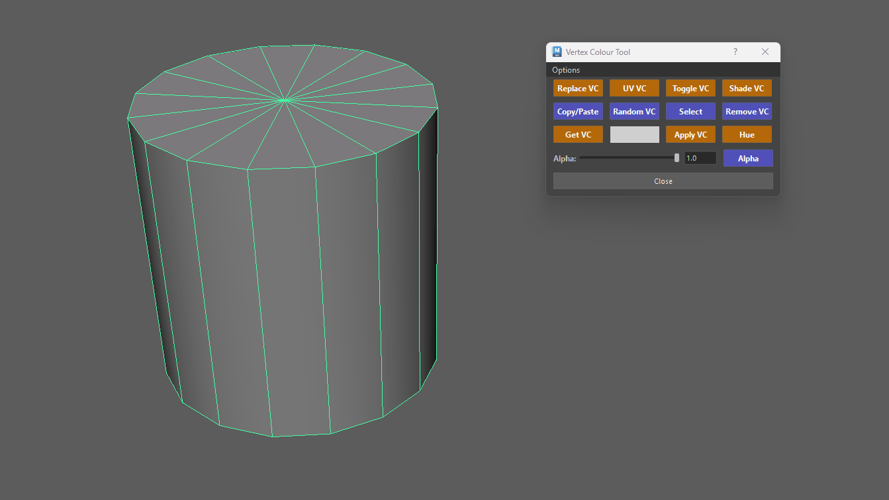
Maya Bug Preventing Vertex Colour from being Removed -
Ctrl + Click: Completely deletes the underlying Color Set.
When you apply Vertex Paint on any of your objects, a "Color Set" is created in Maya that holds all the colour information for each object.
Ctrl + Click the Get Button to open it or find it under "Mesh Display -> Color Set Editor" in the "Modelling" tab.
Info - Color Set Editor
-
Ctrl + Shift Click: Aggressive fallback fix if Maya refuses to delete colors. Works only in component mode.
Note: Deletes history and ungroups the object.
-
{kind=link}
{kind=link}
{kind=link}
{kind=link}
{kind=link}
{kind=link}
{kind=link}
{kind=link}
{kind=link}
{kind=link}
{kind=link}
9. Get VC¶
-
Samples the color from a selected component and loads it into the Swatch (10).
- Works with components or in Object Mode.
- When multiple components selected it only retrieves the first one that has Vertex Colour applied.
- In Object Mode it looks through all of the object's components and retrieves the first one that has Vertex Colour applied.
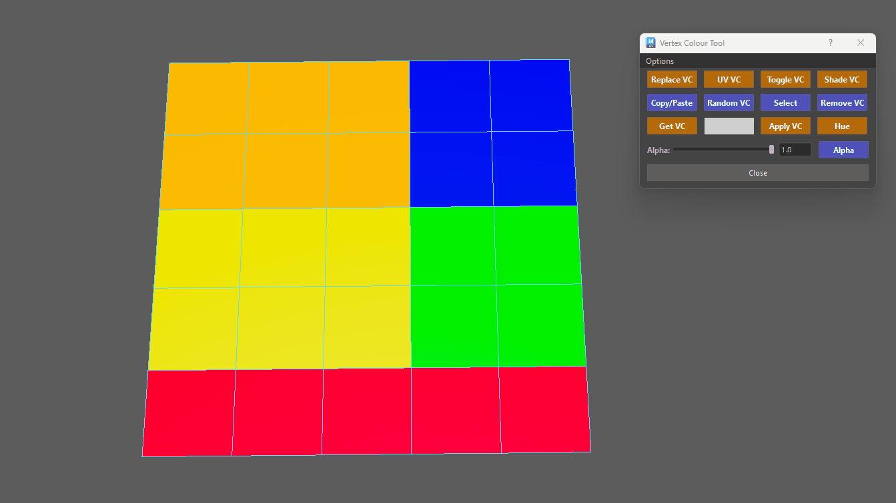
Retrieves the colour of the selected component - Alt + Click: Opens Maya's Apply Color Options.
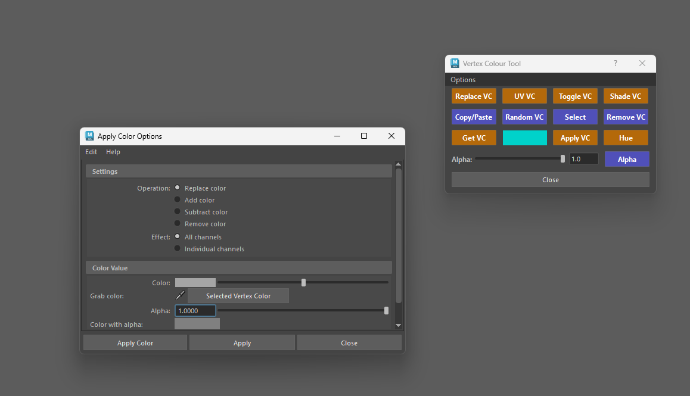
- Ctrl + Click: Opens the Color Set Editor.
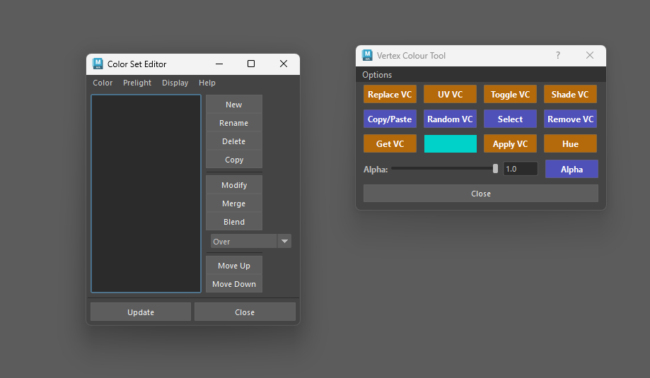
- Shift + Click: Opens the Paint Vertex Color Tool.
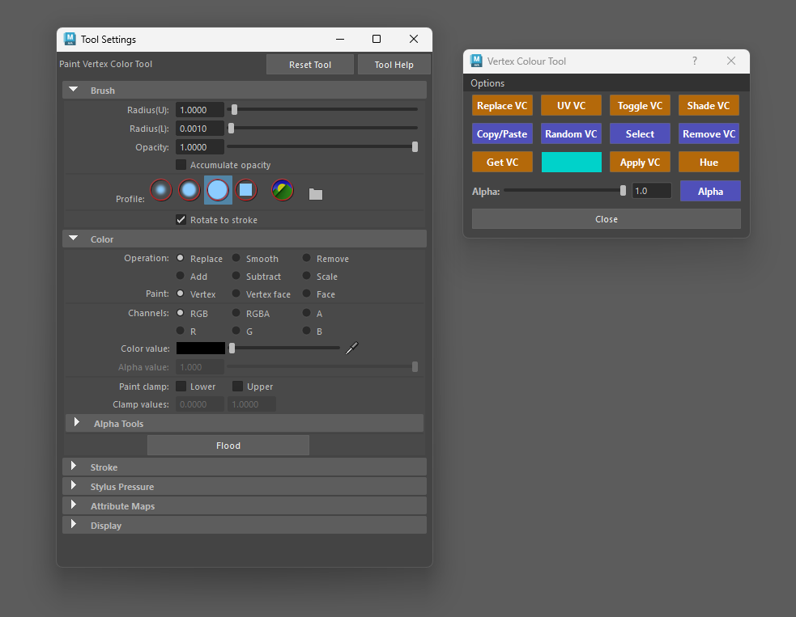
Important - Sampling Colours
Use this when you want to sample colours (e.g. trying to match colours from a different application).
- When sampling colours with Maya's default ColorSpace values will exceed the 0-1 range for RGB. If you try and apply that colour on an object the vertex colour applied will be rendered black.
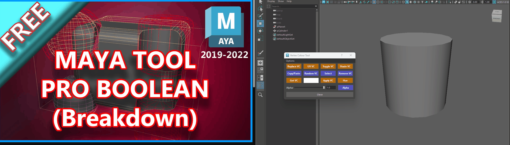
White Value Sampled is above 0-1 (RGB) causing the VC to be set to black -
This feature changes the Color Space in Maya so the colour sampled does not exceed the 0-1 value range for RGB.
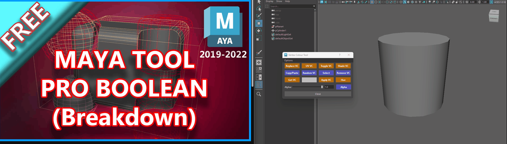
White Value is Clamped to 1 Rendered Correctly -
You can check Maya's Color Management Preferences in the Preferences Window to see what changes are being made.
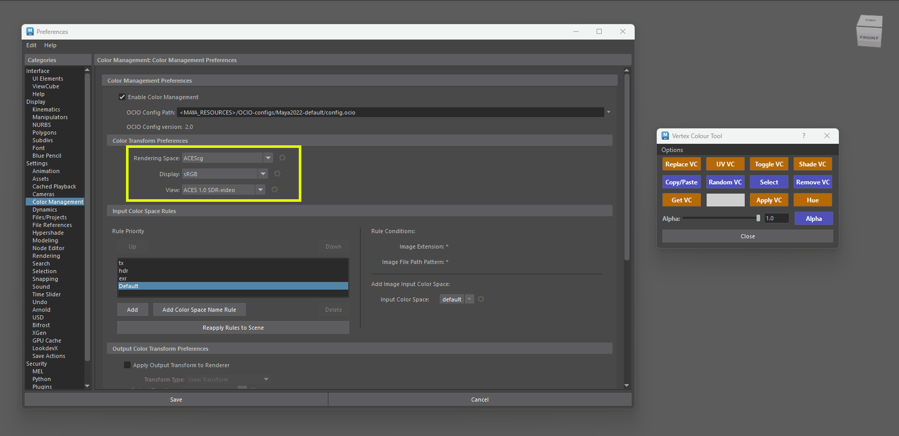
Color Management Preferences
- Works with components or in Object Mode.
{kind=link}
{kind=link}
{kind=link}
{kind=link}
{kind=link}
{kind=link}
{kind=link}
{kind=link}
10. Color Swatch¶
- Opens the color picker. This sets the active color used by Apply VC, Replace VC, and Select.
- Double-Click to open full window.
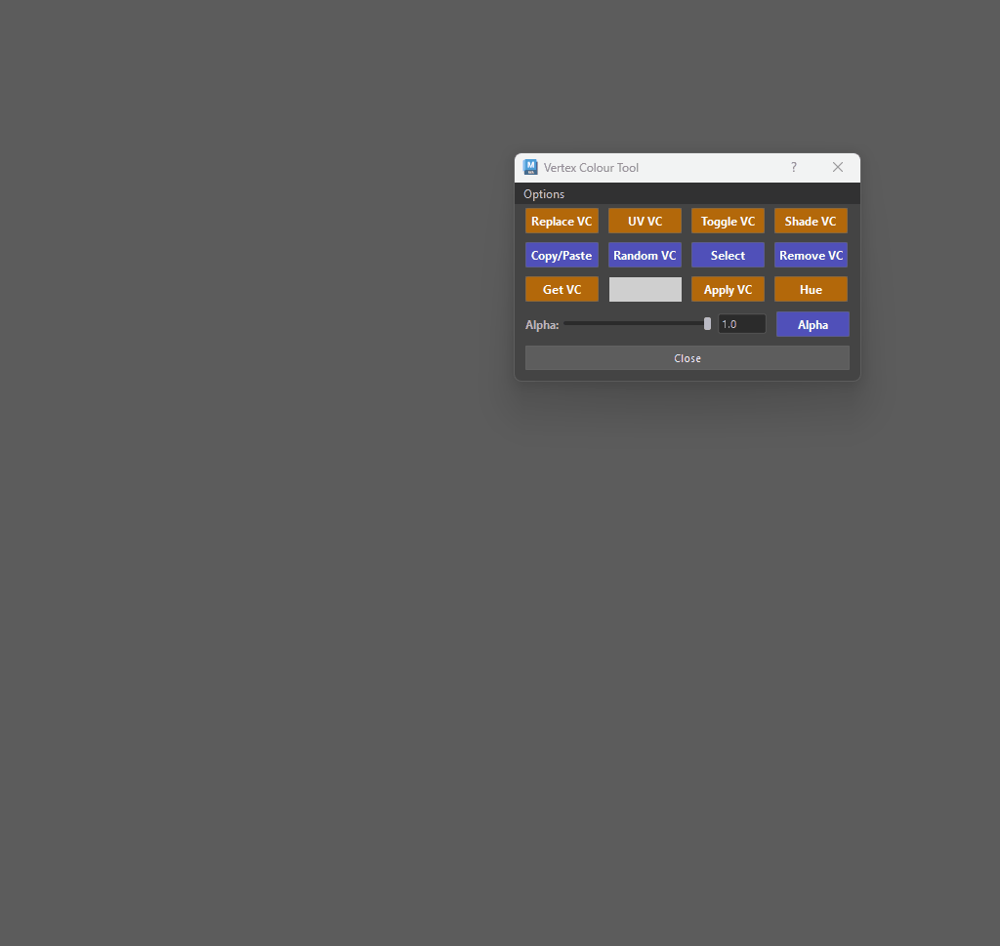
Colour Swatch
- Double-Click to open full window.
{kind=link}
11. Apply VC¶
-
Applies the current swatch color and alpha to your selection.
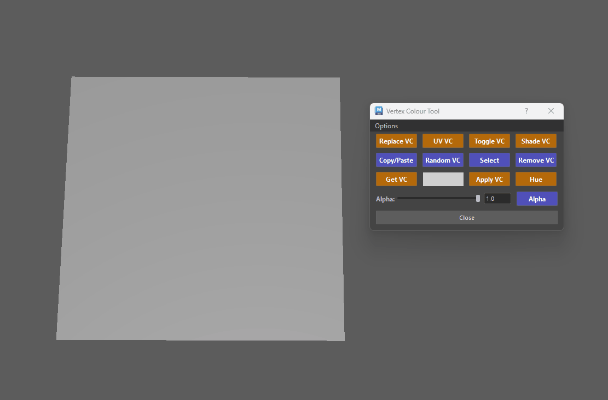
Applies the Colour from the Swatch - Shift + Click (Faces): Applies the color of the last selected face to all other selected faces (much faster approach). Does the same exact thing as the Copy/Paste button.
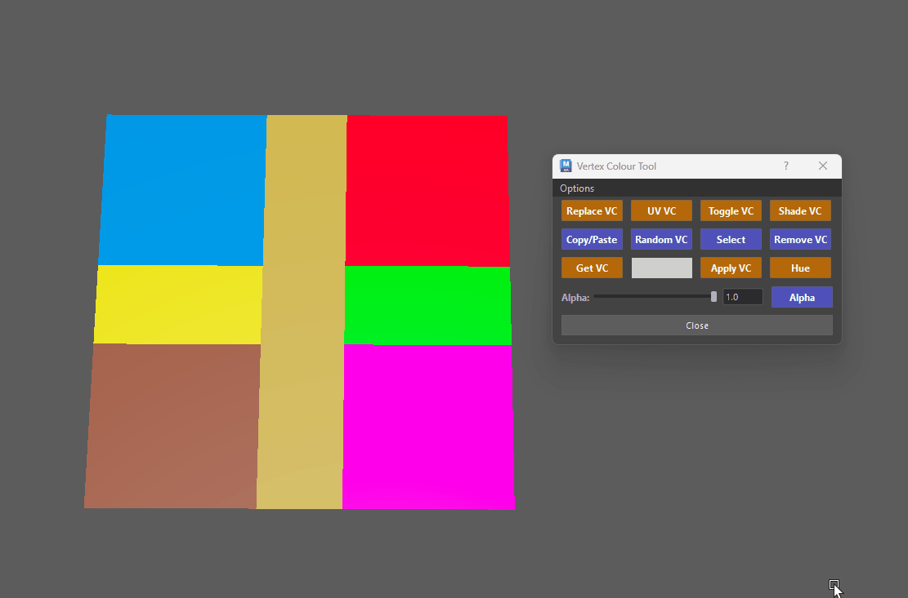
Copy the value of the last selected face to the rest of your selection - Ctrl + Click (Faces): Opens the Paint Vertex Color Tool to apply colors via a texture based on your UV layout.
- The Vertex Paint application is determined by the objects UV layout (from the active UV Set).
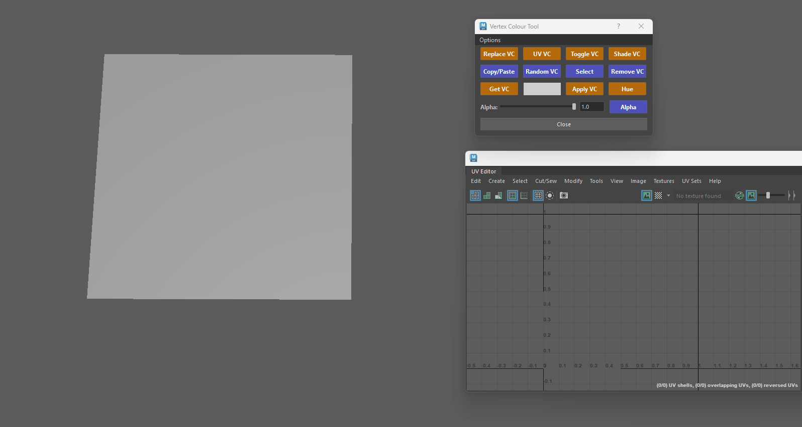
Image based application of VC Tip - Texture Based Interpolation (Smooth VS Faceted)
- You can change the interpolation of how the Vertex Colour are applied from the image by changing the paint mode in the Paint Vertex Color Tool.
- Vertices will give you smoother results, while Faces will give you a more faceted one.
- Shift + Click (Faces): Applies the color of the last selected face to all other selected faces (much faster approach). Does the same exact thing as the Copy/Paste button.
-
Using sRGB - Linear textures to apply vertex colours¶
Important information about Texture Colour Space - sRGB vs Linear
-
When you use an image to create vertex colours (Ctrl + Click on Apply VC), the image's pixel values are copied as-is.
Image files store colours sRGB-encoded, but Maya treats vertex colours as linear data — so the viewport applies its display transform on top of the already-encoded values, and the result looks washed out and brighter than the source image.
-
In the Options Menu the checkbox Convert sRGB to Linear on Image Import, converts the imported vertex colours from sRGB to linear immediately after the import, so what you see in the viewport matches the source texture.
The conversion runs per face-vertex (respecting the Paint mode of the Paint Vertex Color Tool — Vertex, Vertex face, or Face), leaves alpha untouched, and is fully undoable as part of the import.
-
Disable it if your target engine or pipeline expects raw sRGB values stored in the vertex colours (e.g. a shader that handles the conversion itself).
-
Examples:
-
The Issue: Washed out Vertex colours not matching the source image colour values.
View Transform
Ensure your View Transform is always set to Un-tone-mapped (sRGB) when you are trying to match colours, as this will match external apps like Photoshop, Unreal etc.
-
Notice how if we change our View Transform to RAW the colours in our viewport match the reference image.
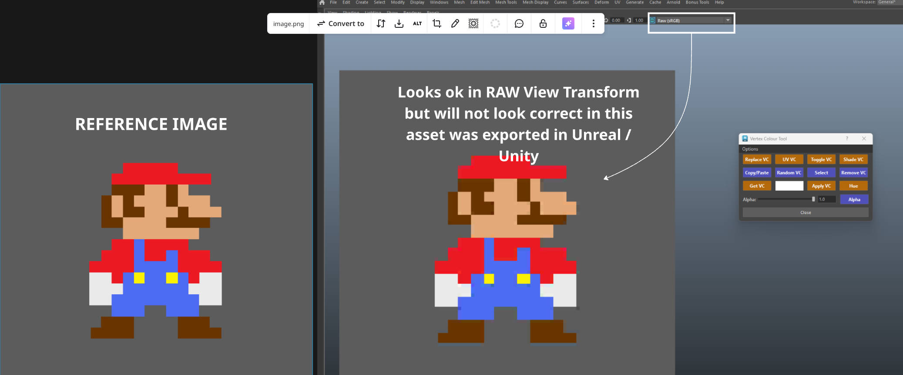
-
2 Ways to Fix:
-
Fix 1: Convert your image to Linear in Photoshop.
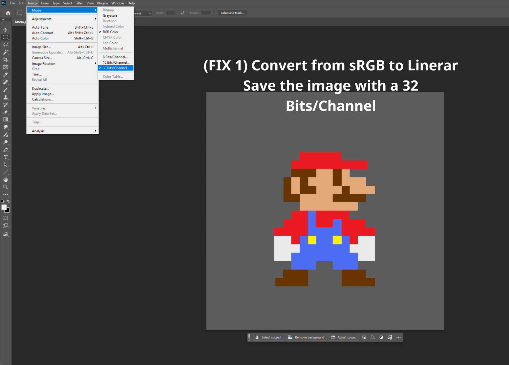
-
Fix 2: Use Checkbox - Convert sRGB to Linear on Image Import.
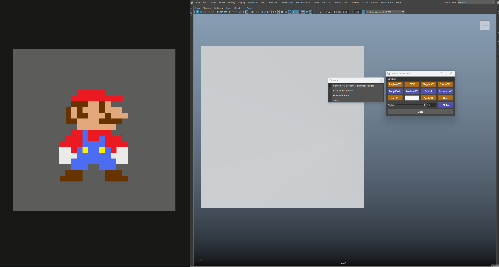
Converting sRGB to Linear
-
-
This is the easier option and automatically converts the colours when applied to your object in Maya (no texture conversion in Photoshop needed).
-
By default the value is always on, so if you notice and discrepancies with your reference image, uncheck the checkbox and try again.
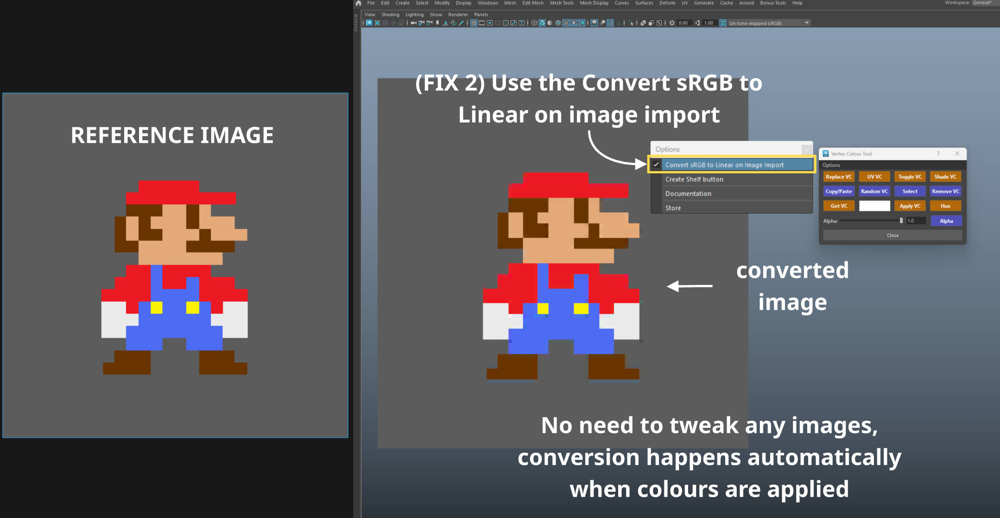
-
Final Result in Unreal Engine
-
{kind=link}
{kind=link}
{kind=link}
{kind=link}
{kind=link}
{kind=link}
{kind=link}
{kind=link}
{kind=link}
{kind=link}
{kind=link}
12. Hue¶
- Shifts the hue of the selected vertices/faces to match the hue currently loaded in the Color Swatch (10), while preserving existing luminosity/saturation.
- You can interpolate the Hue changes by switching from Vertex to Face Mode.
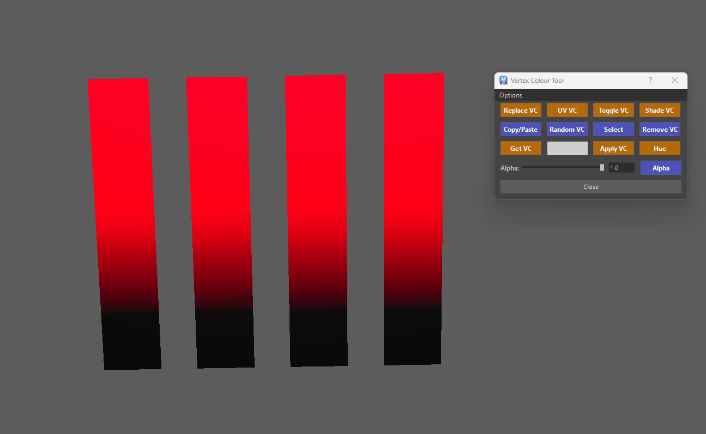
Hue Changes
- You can interpolate the Hue changes by switching from Vertex to Face Mode.
{kind=link}
13. Alpha Controls (Slider, Input & Button)¶
- Use the slider or text box to dial in your exact opacity (0.0 to 1.0).
- Click (Alpha Button): Applies the slider's alpha value to your selection.
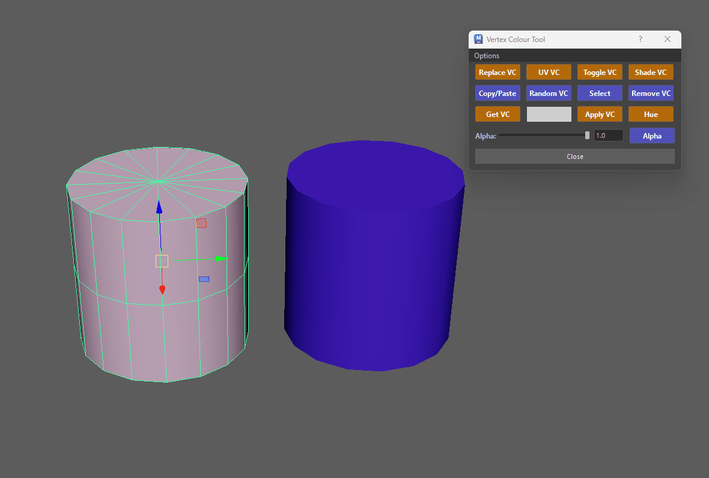
Applying Alpha VC - Ctrl + Click (Alpha Button): Samples the alpha value from your selection and updates the slider.
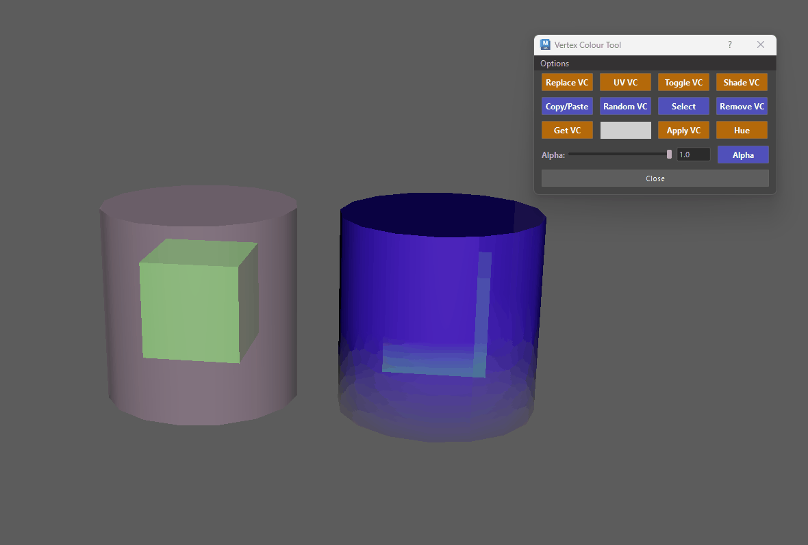
Retrieving Alpha Values - Shift + Click (Alpha Button): Applies a completely random alpha value to the selection.
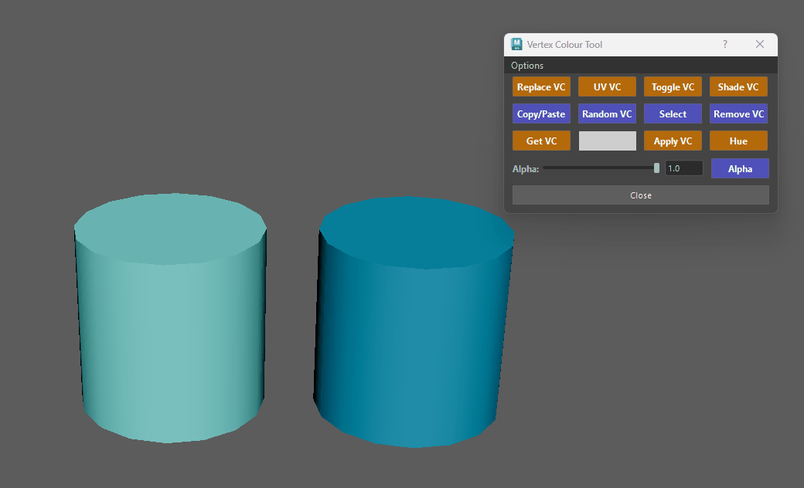
Assigning Random Alpha Values
- Click (Alpha Button): Applies the slider's alpha value to your selection.
{kind=link}
{kind=link}
{kind=link}
Options Menu¶
{kind=link}
-
Convert sRGB to Linear on Image Import - Refers to when using texture images to create vertex colours (Ctrl + Click the Apply VC button).
- For more info click here (sRGB -Linear)
-
Create Shelf Button - Creates a shelf button for this tool directly on your active Maya shelf.
-
Documentation - Opens a link to the documentation.
-
Store - Opens links to ArtStation and Gumroad.
Important Reminders¶
Track Selection order¶
- Ensure Track selection order is enabled in the Maya Preferences here.
Untrusted Plugin Loading - Security Warning¶
-
Why does Maya show a security warning the first time?
The first time you use the tool, Maya will show an "Untrusted Plugin Loading" warning for VertexColourToolCmd.py. This is normal and nothing to worry about.
-
Maya will ask for confirmation before loading any plug-in that lives outside Maya's own install folders — including plug-ins in your personal scripts directory, which is where this tool is installed. Maya isn't detecting anything harmful; it simply doesn't recognise the location as trusted yet.
-
VertexColourToolCmd.py is part of the Vertex Colour Tool. It's a small companion plug-in that makes vertex colour painting fully undoable — it stores each paint operation in the mesh's construction history, so Ctrl+Z removes the paint without touching the rest of your history.
-
Click Allow to load it. Tick Apply to all plugins in this location"ow" first if you don't want to be asked again — this tells Maya to trust the tool's folder from now on. If you click Deny, the tool still works, but painting won't be undoable and you'll see a warning in the Script Editor.
You can review or change trusted locations at any time under Windows → Settings/Preferences → Preferences → Security.
Vertex Paint Not Removed¶
- If you are unable to simply remove vertex paint from your objects find all the info here.
Sampling Colours¶
- If you need to sample colours follow the guide here.
Working with High Poly Counts¶
-
The tool has been heavily optimized to work on high poly meshes.
Because of this the tool bypass standard construction history.
-
The tool has been tested applying Vertex Colours with 500K faces and the results take just a few seconds.
-
With dense objects it is advised to delete your history as it may impact performance.
Applying Vertex Colour on a 1.2m tris object -
Please make sure to save your scene before working on higher polycounts as the computational process may take some time.
Info - Built-in Poly Count Thresholds & Warnings
- 150,000 Faces (Select Threshold): If you attempt to apply a swatch color directly to more than 150,000 selected faces, the tool pauses and triggers a confirmation popup warning you that the operation may take some time.
Window Pop up when working with a (1.2m tris) High Poly Object
{kind=link}
{kind=link}